set.seed(1)
x = 0
for( t in 2:100) x[t] = x[t - 1] + rnorm(1,0,1)
ts.plot(x, lwd = 2)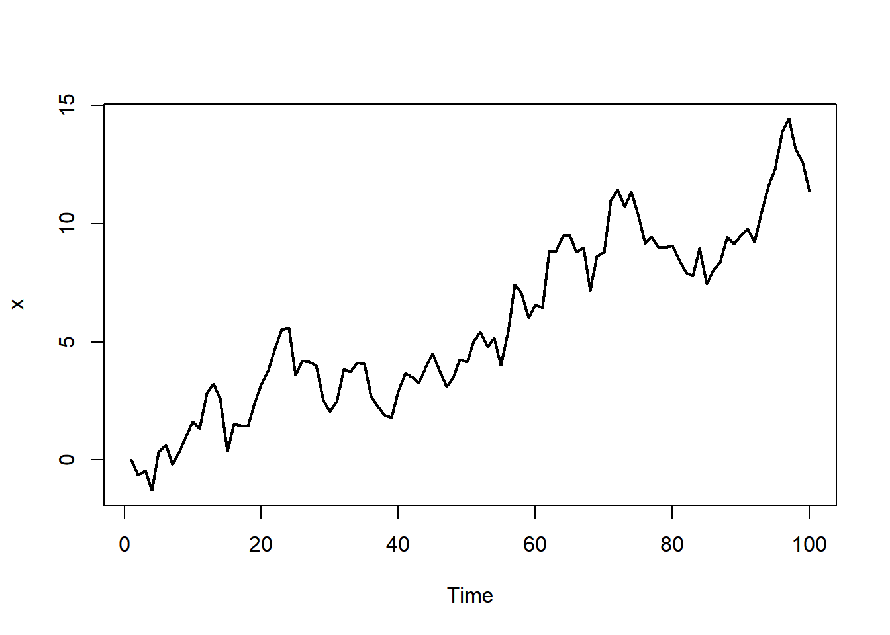
Diz-se que uma série temporal observada possui tendência quando ela exibe um padrão de crescimento ou decrescimento em médio/longo prazo.
A Figure 6.1 mostra a série do número mensal de acidentes com aeronaves, construída através dos dados diários mantidos pela Força Aérea Brasileira. Note uma tendência de decrescimento na série até meados de 2016, substituída então por uma tendência de crescimento.
url <- 'https://www.dropbox.com/scl/fi/kq4jwbovu94u857238sus/N-mensal-de-acidentes-com-aeronaves-2013jan.csv?rlkey=n5pa45e7ht33houmiawdkjb09&dl=1'
x <- read.csv(url, h = T)
acidentesFAB <- ts( x, start = c(2013,1), frequency=12)
ts.plot(acidentesFAB, lwd = 2, xlab = 'Ano', ylab = 'No. acidentes')
A tendência pode ser duas naturezas: determinística ou aleatória.
A tendência aleatória é construída ao acaso. Considere, por exemplo, o passeio aleatório definido por \(x_0=0\) e \(x_t = x_{t-1}+\varepsilon_t\), onde \(\varepsilon_t\) é um ruído branco gaussiano com \(\nu=1\). Já foi mostrado que \(E(x_t)=0\) e \(Var(x_t)=t\). A figura abaixo apresenta uma série simulada desse processo.
set.seed(1)
x = 0
for( t in 2:100) x[t] = x[t - 1] + rnorm(1,0,1)
ts.plot(x, lwd = 2)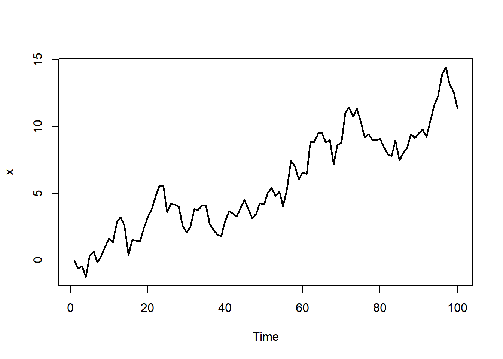
Observe que a série exibe um tendência, mas não há qualquer explicação para a sua exsitência, uma vez que este comportamento é fruto do acaso. Ainda, teremos que \(E(x_t)=0\), o que torna o padrão observado irrelevante.
Na tendência determinística, há uma função T(.) que determina seu comportamento. Nesse caso, é assumido que
\[y_t = T(t) + \varepsilon_t,\] onde \(\varepsilon_t\) é uma série estacionária com média \(0\) e variância \(\nu\). Deste modo, \(E(y_t)=T(t)\), o que implica que \(T(.)\) representa o comportamento médio da série. O problema de estimar \(T(.)\) é denominado suavização.
Na prática, é impossível determinar se uma tendência é aleatória ou determinística, cabendo ao estastístico procurar se há motivos para acreditar que está analisando o segundo tipo. A partir deste momento, toda tendência será considerada determinística.
Considere que a série temporal foi observada até o tempo \(s\). Então, a tendência é definida como uma função \(T:(0,t]\rightarrow \mathbb{R}\). O Teorema de Weierstrass afirma que, se \(T\) é contínua, então para qualquer \(\delta>0\), existe um polinômio \(u(.)\) tal que \[|T(t)-u(t)|<\delta.\] Isto quer dizer que \(T(.)\) sempre pode ser aproximada por um polinômio. Assim, para determinada ordem \(p\), é correto afirmar que
\[\begin{equation}
y_t = \beta_0 + \sum_{j=1}^p \beta_j t^j + \varepsilon_t
\end{equation}\] onde \(\varepsilon_t\) é uma série estacionária, é um modelo razoável para uma série temporal com tendência. Assumindo que \(\varepsilon_t\) é um ruído branco gaussiano, tem-se o modelo de tendência polinomial de grau \(p\).
Fazendo \(\boldsymbol{f}_t'=(1,t,\ldots,t^p)\) , o modelo de tendência polinomial é reescrito como \[\boldsymbol{y}=\boldsymbol{F}'\boldsymbol{\beta}+\boldsymbol{\varepsilon}\] e inferências sobre \(\boldsymbol{\beta}\) e \(\nu\) são feitas utilizando o modelo linear tradicional.
Example 6.1 Considere o número anual de nascidos vivos no estado do Amazonas entre os anos 2000 e 20013:
x <- c( 67646 , 70252 , 70671 , 70751 , 71345 ,
73488 , 75584 , 73469 , 75030 , 75729 ,
74188 , 76202 , 77434 , 79041)
nascidos <- ts(x, start =2000)ts.plot(nascidos, lwd = 2, ylab = 'No. nascidos vivos')
stats::acf(nascidos)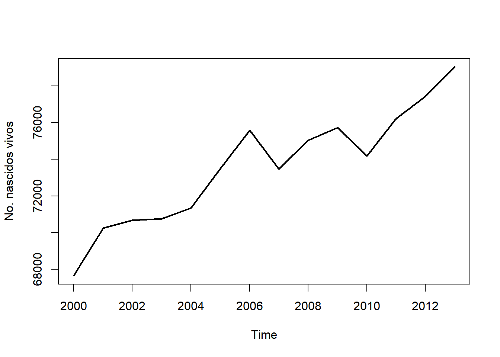
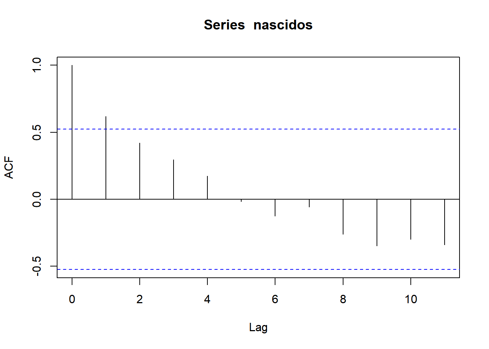
Vamos ajustar um modelo de tendência polinomial de ordem 1, ou seja
\[y_t=\beta_0+\beta_1 t + \varepsilon_t\] onde \(t=1,\ldots,14\) representa os tempos \(2000,\ldots,2013\).
tempo <- 1:14
mod <- lm( nascidos ~ poly(tempo, 1, raw = TRUE))As estimativas de máxima verossimilhança para \(\beta_0\) e \(\beta_1\) são:
mod$coefficients (Intercept) poly(tempo, 1, raw = TRUE)
68266.879 715.178 ou seja, \[\hat{T}(t)=\hat{\beta}+\hat{\beta}_1 t = 68.267+715 t\] Os resíduos do modelo linear mod podem ser obtidos via função residuals. Abaixo, verificamos que a série dos resíduos oscila em torno de zero e que nenhuma autocorrelação parece ser relevante, o que dão indícios de que os erros são um ruído branco.
res <- residuals(mod)
ts.plot( res, main = '')
acf(res, main = '')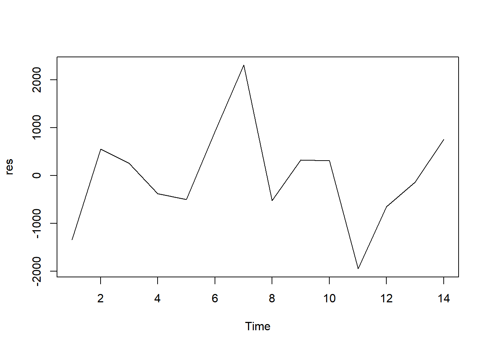
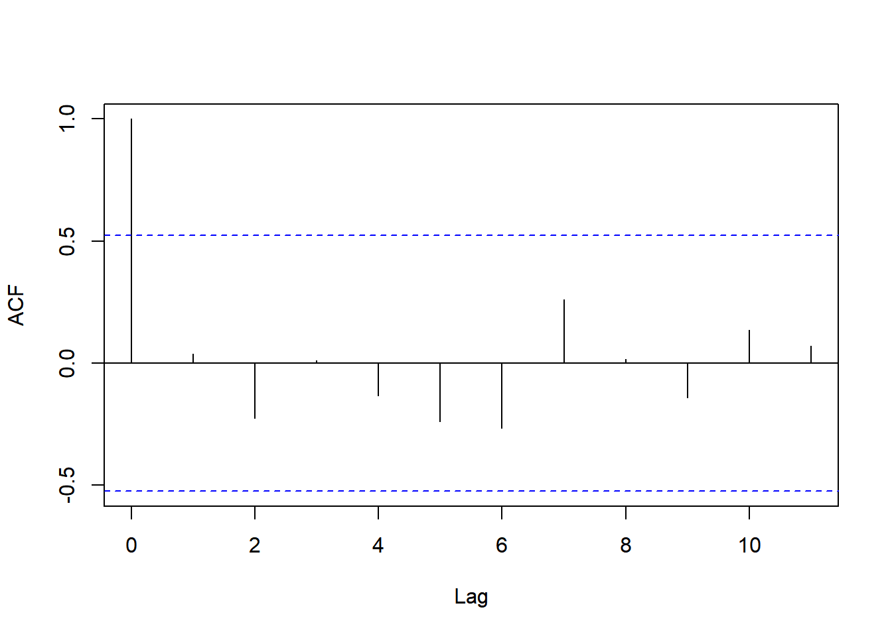
Abaixo, o teste de Shapiro-Wilks não gera evidências contra a suposição de normalidade e o teste de Box-Pierce não gera evidências contra a hipótese de ruído branco.
shapiro.test(res)
Shapiro-Wilk normality test
data: res
W = 0.96982, p-value = 0.8743Box.test(res)
Box-Pierce test
data: res
X-squared = 0.02156, df = 1, p-value = 0.8833É interessante notar que, para \(t=1,\ldots,14\), \[\hat{T}(t)=\hat{\beta}_0+\hat{\beta}_1 t = \hat{y}_t,\] logo, os valores preditos do modelo são uma estimativa para a tendência nos pontos observados.
ts.plot( cbind( nascidos, fitted(mod)), col = 1:2, lwd = 2)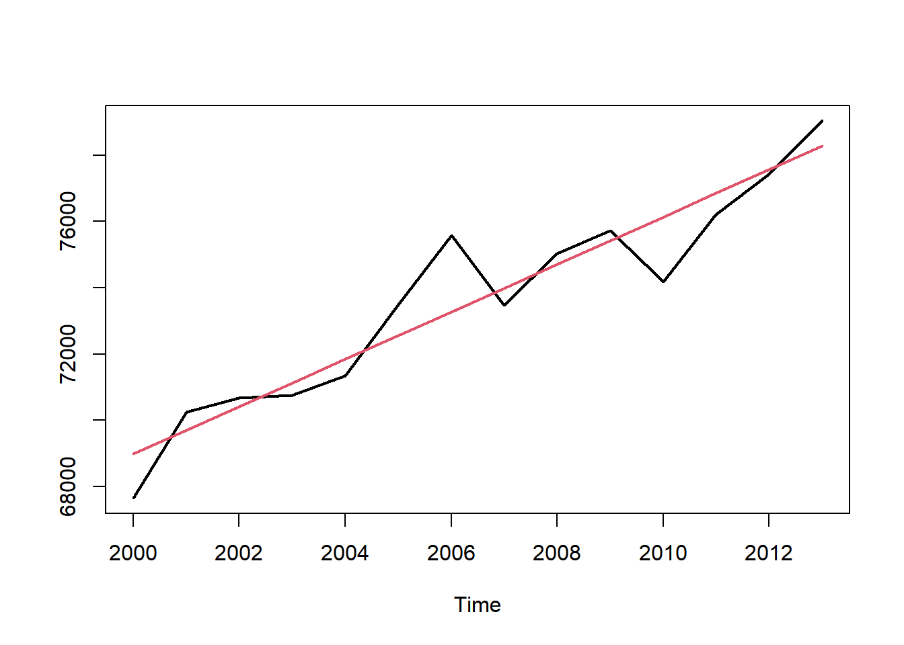
A previsão é realizada utilizando o modelo ajustado, estrapolando para um tempo não observado. Por exemplo a estimativa para 2014 (\(t=15\)) é
\[\hat{T}(15)=\hat{\beta}+\hat{\beta}_1 15 = 78.992\] (o valor real foi 81.145).
É importante ressaltar que esse tipo de modelo é interessante para fazer inferências sobre a tendência, mas pode ser inadequado para previsões, uma vez que o polinômio é uma aproximação apenas para o intervalo observado.
O valor do Critério de Informação de Akaike (AIC) é dado por \(-2L(\hat{\theta})+2k\) onde \(L\) é a função de verossimilhança e \(\hat{\theta}\) e \(k\) são o estimador de máxima verossimilhança para \(\theta\) e sua dimensão, respectivamente. O modelo com menor AIC é considerado mais adequado.
Considere o nível anual, em pés, do Lago Huron. Essa série já vem carregada no R sob o nome LakeHuron.
ts.plot(LakeHuron, lwd = 2, ylab = 'Nível (pés)')
stats::acf(LakeHuron)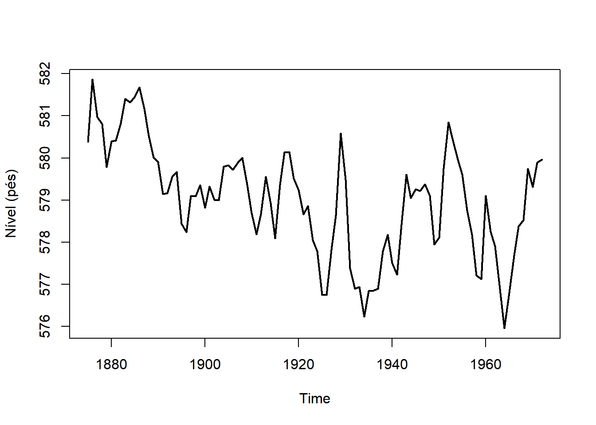
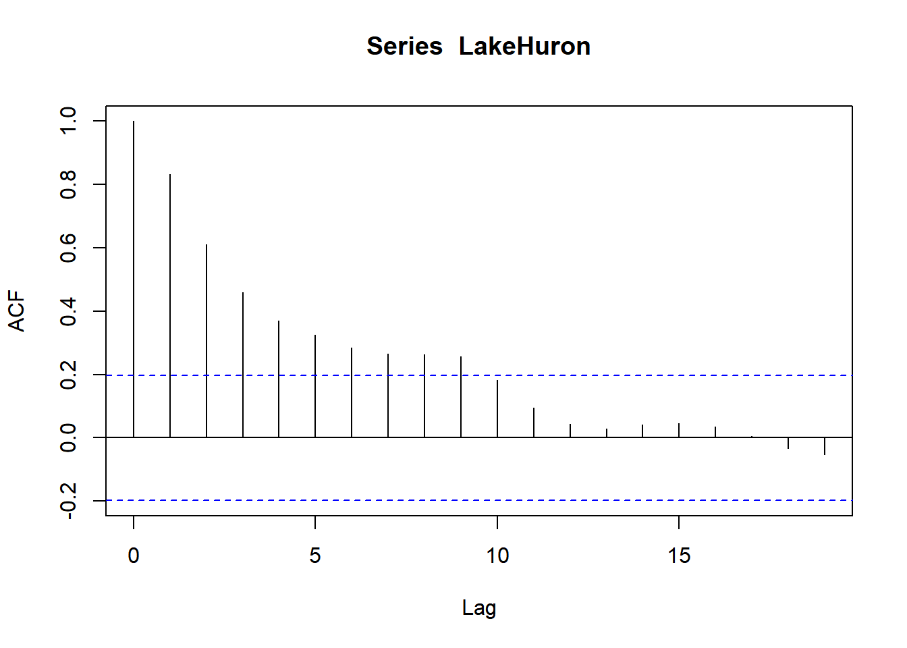
Vamos ajustar alguns modelos para tentar explica a tendêndia dessa série.
tempo <- 1 : length(LakeHuron)
mod1 <- lm( LakeHuron ~ poly(tempo, 1, raw = T))
mod2 <- lm( LakeHuron ~ poly(tempo, 2, raw = T))
mod3 <- lm( LakeHuron ~ poly(tempo, 3, raw = T))
mod4 <- lm( LakeHuron ~ poly(tempo, 4, raw = T))
mod5 <- lm( LakeHuron ~ poly(tempo, 5, raw = T))
mod6 <- lm( LakeHuron ~ poly(tempo, 6, raw = T))
AIC(mod1)[1] 306.0957AIC(mod2)[1] 287.8407AIC(mod3)[1] 289.8391AIC(mod4)[1] 291.7127AIC(mod5)[1] 293.475AIC(mod6)[1] 291.7054Entre os modelos ajustados, o de ordem 2 foi aquele com o menor valor do AIC. Sua tendência estimada é
O polinômio ajustado foi \[\hat{T}(t) = 581 -0,091 t + 0,001 t^2\]
Abaixo, apresentamos a análise de resíduos desse modelo.
res <- residuals(mod2)
ts.plot( res, main = '')
abline(h = 0, lty = 2)
acf(res, main = '')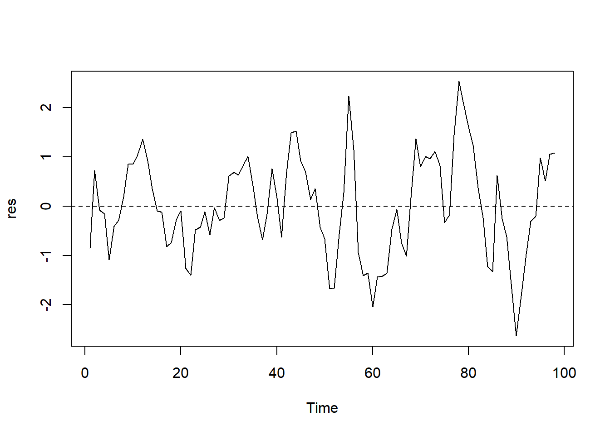
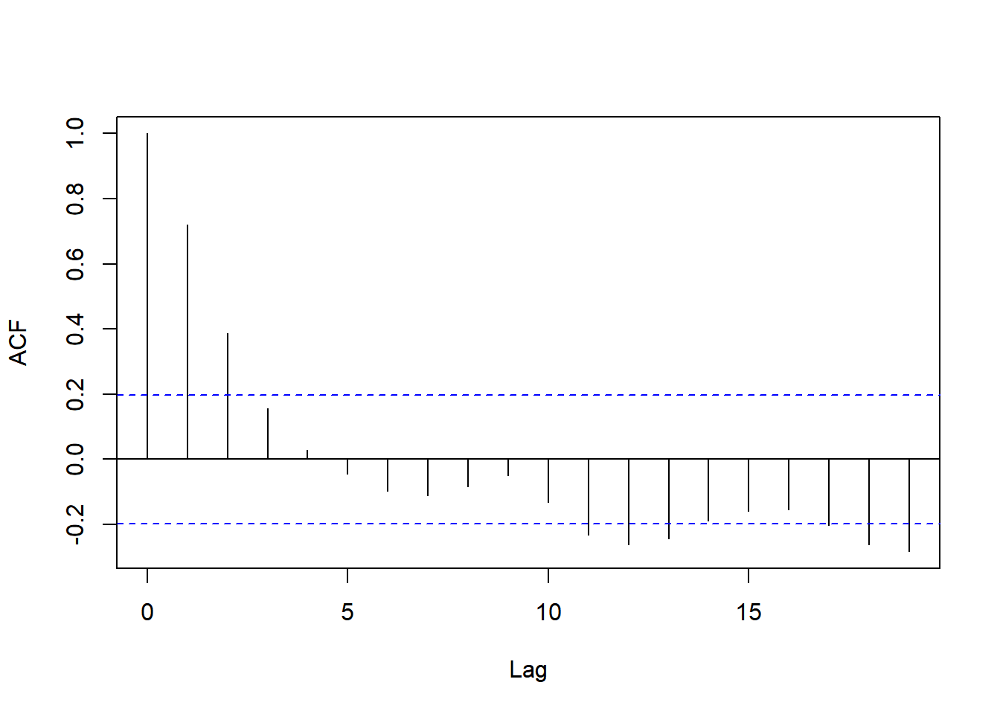
Os resíduos parecem oscilar em torno de zero com um variância constante, mas o correlograma sugere que não temos um ruído branco. O teste de Box-Pierce, dado abaixo, confirma a nossa suspeita. Deste modo, este modelo não é adequado.
Box.test(res)
Box-Pierce test
data: res
X-squared = 50.973, df = 1, p-value = 9.365e-13O modelo de tendência polinomial é robusto quando relaxamos a necessidade do ruído branco ser gaussiano. Nesse sentido, as estimativas ainda são válidas, mas perdemos todos os testes de hipóteses.
Os métodos não paramétricos independem da distribuição do ruído, sendo úteis para a análise exploratória.
O método das médias móveis consiste em obter \(\hat{T}(t)\) através da média da série considerando os valores \(\{y_{t-h},\ldots,y_t,\ldots,y_{t+h}\}\), para \(h>0\), ou seja \[\hat{T}_h(t)=\frac{1}{2h+1}\sum_{ i = t-h}^{t+h}y_i,\;h<t<n-h\]. A constante \(h\) é denominada largura da banda. Para compreender melhor esse estimador, considere que a relação entre pontos vizinhos é aproximadamente linear, ou seja, para qualquer \(t\in\mathcal{V}_t=\{t-h,\ldots,t+h\}\) existem \(a_\mathcal{V}\) e \(b_\mathcal{V}\) tais que \[y_t\approx a_\mathcal{V}+b_\mathcal{V}t+\varepsilon_t,\] onde \(t\) é uma série temporal estacionária e ergódica. Então \[\begin{align}E(\hat{T}(t))&=\frac{a_\mathcal{V}+b_\mathcal{V}(t-h)+\cdots+a_\mathcal{V}+b_\mathcal{V}t+\cdots+a_\mathcal{V}+b_\mathcal{V}(t+h)}{2h+1}\\&=a_\mathcal{V}+b_\mathcal{V}t\end{align}\] \[Var(\hat{T}(t))=\frac{\nu}{2h+1}+\frac{2}{2h+1}\sum_{j=1}^{2h}j\gamma(j)\] Observe que, como \(T(.)\) é determinística e os ruídos são estacionários e ergódicos, então \(Var(\hat{T})\) eventualmente vão para zero quando \(h\rightarrow \infty\). Contudo, \(T(.)\) é localmente linear, logo \(\hat{T}\) é um estimador razoável para valores baixos de \(h\).
%